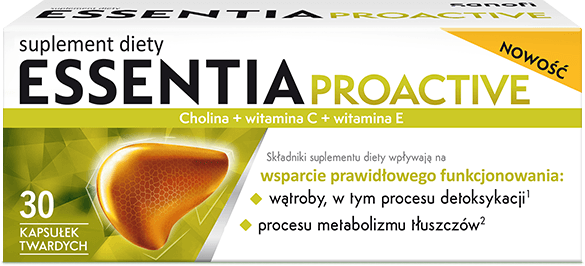
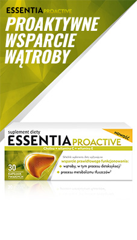
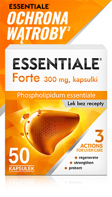
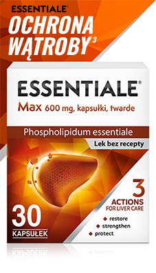

Czuj się
młodziej,
dłużej

Zachowaj zdrową wątrobę na dłużej
Twoja wątroba odpowiada m.in za procesy energetyczne i sprawia,
że czujesz się
w pełni sił. Essentia proactive wspiera
prawidłowe funkcjonowanie wątroby.1
Wspomaga detoksykację oraz metabolizm tluszczów1,2
Zdrowa wątroba radzi sobie
z
metabolizmem tłuszczów i procesem
detoksykacji w organizmie3.
Wspomagaj ją codziennie
suplementując
Essentię Proactive
Unikalny skład2,4
Cholina zawarta w suplemencie diety pomaga w utrzymaniu prawidłowego funkcjonowania wątroby, w tym procesu detoksykacji oraz wspiera utrzymanie prawidłowego metabolizmu tłuszczów. Witaminy C i E chronią przed stresem oksydacyjnym.
Na 2 tygodnie stosowania
Opakowanie Essentia Proactive
wystarcza na dwutygodniowe
stosowanie przy wygodnym
dawkowaniu 1x dziennie (2 kapsułki)
Proaktywne wsparcie prawidłowego
funkcjonowania:
Zachowaj swój styl życia
Aby wątroba była stale w optymalnej kondycji, powinniśmy ją wspierać w codziennej pracy, poprzez dostarczanie witamin i składników odżywczych. Zwłaszcza takich, które wspierają utrzymanie prawidłowego metabolizmu tłuszczów oraz chronią komórki wątroby przed skutkami stresu oksydacyjnego. To ważne, aby pomimo upływu czasu, dłużej czuć się młodo i być w dobrej formie. Zapoznaj się z informacjami o tym jest istotne, aby samodzielnie zadbać o wątrobę.
Wątroba odgrywa kluczową rolę w procesach metabolicznych, na przykład w rozkładaniu i przekształcaniu niektórych substancji, (np. glikogenu w glukozę). Jedną z jej głównych funkcji jest także usuwanie toksyn z organizmu.3
Utrzymuj prawidłową masę ciała
Nadwaga lub otyłość mogą obciążać wątrobę, prowadząc do stłuszczenia wątroby. Aby tego uniknąć, utrzymuj właściwą masę ciała.6

Poznaj produkty z rodziny Essentiale
|

Essentia Proactive |

Essentiale Forte |

Essentiale Max |
||
|---|---|---|---|---|
| Rodzaj produktu | Suplement diety | Lek bez recepty | Lek bez recepty | |
| Postać | Kapsułki twarde | Kapsułki twarde | Kapsułki twarde | |
| Obszar działania | Wsparcie prawidłowego działania zdrowej wątroby na co dzień | Leczenie chorób wątroby. Zmniejsza subiektywne dolegliwości, takie jak: brak apetytu, uczucie ucisku w prawym nadbrzuszu spowodowane uszkodzeniem wątroby w wyniku nieprawidłowej diety, działania substancji toksycznych lub w przebiegu zapalenia wątroby8 | ||
| Skład | Cholina, witamina C, witamina E | 300mg fosfolipidów niezbędnych (EPL) | 600mg fosfolipidów niezbędnych (EPL) | |
| Zawartość opakowania | 30 kapsułek | 50 kapsułek | 30 kapsułek | |
| Sprawdź | Sprawdź | Sprawdź | ||
Stosowanie
Rozwiń ↓
Zalecana dawka dzienna dla dorosłych to 2 kapsułki raz dziennie. Opakowanie wystarcza na 2-tygodniową kurację.
2 kapsułki
dziennie
opakowanie
na 2 tyg.
Unikalny skład4
Rozwiń ↓
Zawartość składników w zalecanej porcji dziennej
(2 kapsułki twarde)
170 mg choliny
24 mg Witaminy C
3,6 mg Witaminy E
Wegański
Bez glutenu
Bez laktozy
Zawartość składników w zalecanej porcji dziennej
(2 kapsułki twarde)
170 mg choliny
24 mg Witaminy C
3,6 mg Witaminy E
Wegański
Bez glutenu
Bez laktozy
Przypisy
- 1. Opinion of the Scientific Panel on Dietetic Products, Nutrition and Allergies: Contribution to normal psychological functions (ID 1501) 2011;9(4):2056
- 2. Cholina zawarta w suplemencie diety pomaga w utrzymaniu prawidłowego funkcjonowania wątroby i wspiera utrzymanie prawidłowego metabolizmu tłuszczów. Witamina C i witamina E pomagają w ochronie komórek przed stresem oksydacyjnym.
- 3. https://www.mp.pl/pacjent/gastrologia/choroby/watroba/50948,watroba-budowa-i-funkcje data dostępu 06.03.2023
- 4. Jedyny suplement diety zawierający cholinę, wit. C i wit. E. wśród suplementów diety z bazy OTC 03B1 Liver remedies IQVIA ePharmacy tracker+ 03B1 Liver remedies, MAT11/22 OTC
- 5. Journal 2010;8(10):1815 Scientific Opinion on the substantiation of health claims related to vitamin C; EFSA Journal 2010;8(10):1816; Scientific Opinion on the substantiation of health claims related to vitamin E
- 6. Dieta Polaków a zalecenia – za tłusto, za słono, za słodko - Narodowe Centrum Edukacji Żywieniowej (pzh.gov.pl) https://ncez.pzh.gov.pl/abc-zywienia/dieta-polakow-a-zalecenia-za-tlusto-za-slono-za-slodko/ data dostępu: 20.03.2023
- 7. Gundermann KJ, Kuenker A, Kuntz E, Droździk M. Activity of essential phospholipids (EPL) from soybean in liver diseases. Pharmacol Rep. 2011;63(3):643-59.
- 8. CHPL Essentiale Forte 10.2022 oraz CHPL Essentiale Max 10.2022
ESSENTIA PROACTIVE, suplement diety, kapsułki twarde. Zawartość składników aktywnych w zalecanej porcji dziennej (2 kapsułki): 170 mg choliny; 24 mg witaminy C – 30% RWS; 3,6 mg witaminy E – 30% RWS. [RWS – referencyjna wartość spożycia]. Zalecane spożycie: Dorośli - 2 kapsułki dziennie. Cholina wpływa na wsparcie prawidłowego funkcjonowania wątroby. Suplement diety nie może być stosowany jako substytut (zamiennik) zróżnicowanej diety. Prowadzenie zdrowego trybu życia i stosowanie zrównoważonej diety są niezbędne dla zachowania dobrego stanu zdrowia. Kobiety w ciąży, karmiące oraz osoby pozostające pod opieką medyczną nie powinny spożywać tego suplementu diety bez konsultacji z lekarzem. Produkt nie może być stosowany przez osoby uczulone na którykolwiek ze składników preparatu. Podmiot wprowadzający do obrotu: Opella Healthcare Poland Sp. z o.o.
ESSENTIALE FORTE, kapsułki, 300 mg fosfolipidów z nasion sojowych. Wskazania: Roślinny produkt leczniczy stosowany w chorobach wątroby. Zmniejsza dolegliwości, jak: brak apetytu, uczucie ucisku w prawym nadbrzuszu spowodowane uszkodzeniem wątroby w wyniku nieprawidłowej diety, działania substancji toksycznych lub zapalenia wątroby. {ChPL 10.2022} Podmiot odpowiedzialny: Opella Healthcare Poland Sp. z o.o., grupa Sanofi
ESSENTIALE MAX, kapsułki, twarde, 600 mg fosfolipidów z nasion sojowych. Wskazania: Roślinny produkt leczniczy stosowany w chorobach wątroby. Zmniejsza dolegliwości, jak: brak apetytu, uczucie ucisku w prawym nadbrzuszu spowodowane uszkodzeniem wątroby w wyniku nieprawidłowej diety, działania substancji toksycznych lub zapalenia wątroby. {ChPL 10.2022} Podmiot odpowiedzialny: Opella Healthcare Poland Sp. z o.o., grupa Sanofi
To jest lek. Dla bezpieczeństwa stosuj go zgodnie z ulotką dołączoną do opakowania. Nie przekraczaj maksymalnej dawki leku. W przypadku wątpliwości skonsultuj się z lekarzem lub farmaceutą.
MAT-PL-2300609-2.0-04.2023